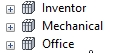
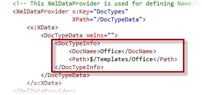

Vault Quickstart is configured for the creation
of Inventor, AutoCAD Mechanical und Microsoft Office documents
starting from pre-configured templates.

This template structure is shown in the file
creation dialog boxes: File.XAML and FileOffice.XAML. An addition
or expansion of the template structure or document types must be
configured in either the XAML file as the Vault template folder
structure.

Sequence of the selection list
The order of the templates corresponds to the
order in which the originals were added to this directory if no
sorting is activated. For example, if an extra template file is
added to Inventor templates, this will be listed at the bottom of
the list.